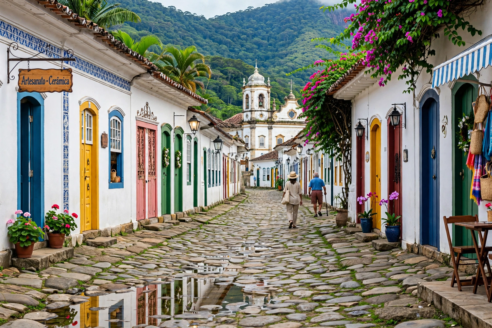

Paraty (sometimes spelled Parati) is a coastal municipality in the state of Rio de Janeiro, Brazil, celebrated for its exceptionally preserved Portuguese colonial historic centre and its setting between the forested Serra da Bocaina mountains and the island-studded Bay of Ilha Grande. Founded in the 17th century, it was the terminus of the Caminho do Ouro (Gold Trail), over which gold from Minas Gerais was shipped to Portugal. In 2019, Paraty and Ilha Grande were inscribed together as a UNESCO World Heritage Site for their culture and biodiversity.
| Paraty | |
|---|---|
 | |
| Country | Brazil |
| State | Rio de Janeiro |
| Founded | 1667 |
| Population | ~45,000 |
| Status | UNESCO World Heritage Site (2019, with Ilha Grande) |
The area was originally inhabited by the Guaianá people; the name Paraty comes from a Tupi word for a local fish (mullet). Portuguese settlement grew after 1660, and when gold was found in Minas Gerais, Paraty became the port at the end of the Estrada Real's gold trail, guarded by forts. In the 18th century the gold route shifted to Rio de Janeiro, and Paraty declined; in the 19th century it revived briefly with coffee and became famous for its cachaça distilleries — "paraty" was once slang for cachaça itself. Isolation by poor roads preserved its colonial centre until tourism arrived in the 1970s.
The historic centre is closed to cars and paved with irregular stones in a style called pé-de-moleque. Its whitewashed houses with coloured trim and its colonial churches — Santa Rita (1722, the oldest), Nossa Senhora do Rosário, and Nossa Senhora das Dores — line streets that flood picturesquely at high tide, by design, to wash them clean. Paraty hosts the Festa Literária Internacional de Paraty (FLIP), one of Brazil's most important literary festivals, held since 2003, as well as traditional religious festivals and a film festival.
The municipality includes dozens of beaches, waterfalls in the Atlantic forest, and caiçara fishing communities such as Trindade. The surrounding region protects extensive Atlantic Forest in the Serra da Bocaina National Park and the Cairuçu Environmental Protection Area.